Principal Investigator
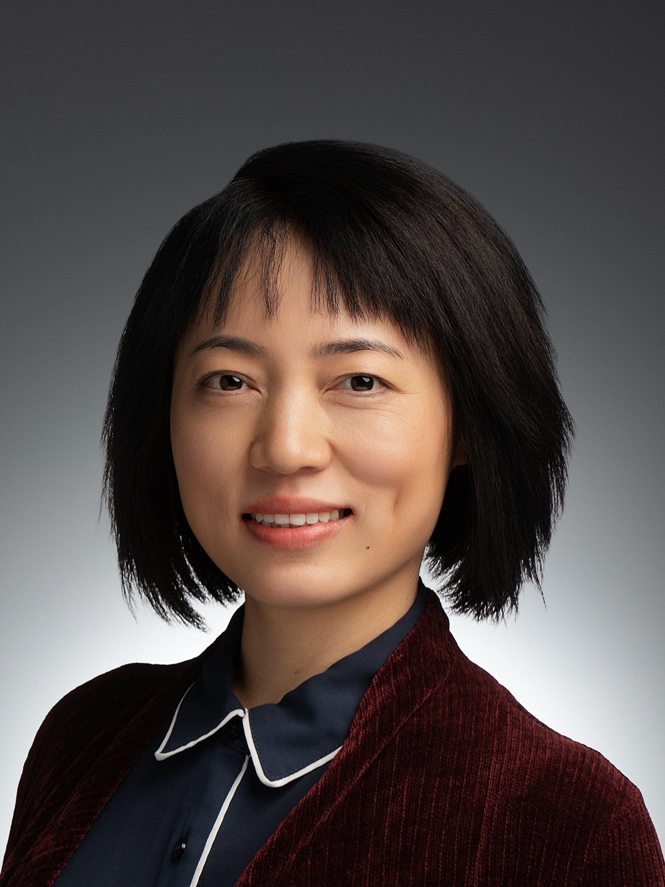
Liyun Miao is an Assistant Professor in the Department of Biological Science at Florida State University, where she leads the lab studying early development and chromatin regulation.
She received her Bachelor's degree in Biotechnology from Qingdao University, completed her PhD with Dr. Jian Zhang at the Institute of Genetics and Developmental Biology, Chinese Academy of Sciences, focusing on translational regulation of sex determination, oogenesis, and oocyte maturation, and then pursued postdoctoral research with Dr. Antonio Giraldez at Yale University, where she studied how pioneer factors regulate chromatin to activate a silent genome and orchestrate early development.
Graduate Students
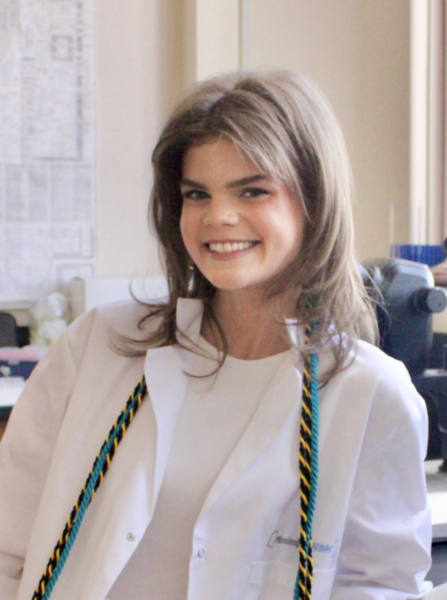
Avrea Boothe is a Ph.D. student in the Cell and Molecular Biology program in the Department of Biological Science at Florida State University
Avrea received her Bachelor’s degree in Biological Sciences from the University of Southern Mississippi, where she conducted undergraduate research to elucidate the role of cancer-associated mutations on cell growth and survival. She joined the Miao Lab in February 2026, where she studies how pioneer transcription factors and chromatin regulatory mechanisms are aberrantly redeployed to rewire gene regulatory networks in cancer. Outside of the lab, she enjoys reading and spending time in nature.
Undergraduate Students
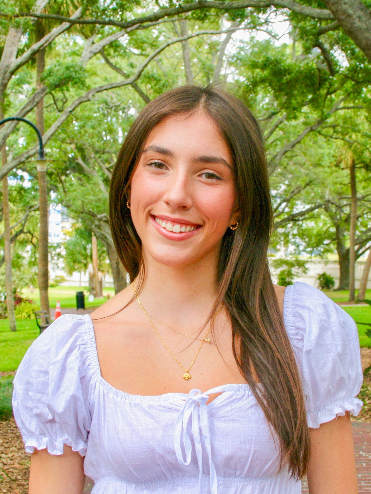
Hanna Crouse is a undergraduate student majoring in Biological Sciences at FSU.
Hanna graduated from H.B. Plant High School before coming to Florida State University, where she developed a strong interest in molecular biology and early developmental processes. Hanna joined the Miao Lab through the Undergraduate Research Opportunity Program (UROP) in November 2025. She is particularly interested in exploring how genetic and molecular mechanisms shape early development and hopes to continue to pursue research in related fields. In her free time, Hanna enjoys playing on the women’s club basketball team at FSU and being involved in the Chi Omega Gamma Chapter as well.
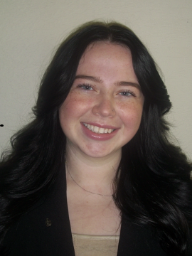
Nicole Karwowski is an undergraduate senior dual-majoring in Biological Sciences and International Affairs at FSU.
Nicole is interested in molecular biology and biotechnology-driven approaches to improving human health, as well as the ways biological research can be applied to real-world challenges. She joined the Miao Lab in January 2026, where she is gaining experience in technical lab skills and research foundations. In addition to her work in the lab, Nicole is a member of FSU’s 2025 iGEM team, served as the Overall Director of FSU Homecoming, is a member of Alpha Kappa Psi Professional Business Fraternity, and works as a Teaching Assistant.
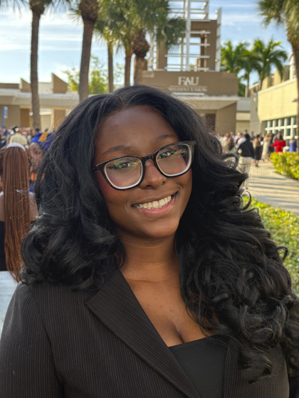
Kamilat Mustapha is an undergraduate student majoring in Computational Biology at Florida State University.
Kamilat graduated from American Heritage School and continues to pursue her interest in applying biological research and computational approaches to real-world challenges. Kamilat joined the Miao Lab through the Direct Independent Study program in January 2026. Outside of the lab, she is a member of the Alpha Epsilon Delta Pre-Med Honor Society and the African Student Association, and she swims and plays tennis recreationally in her free time.
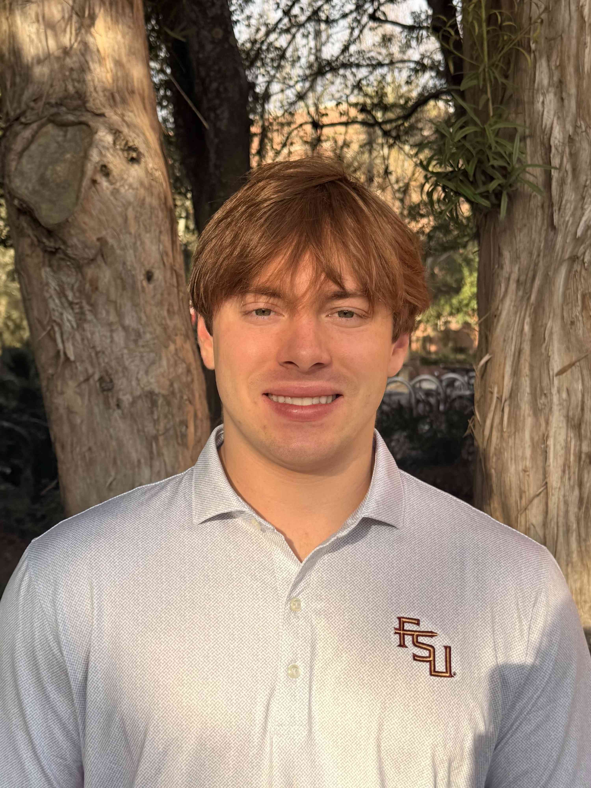
Owen Long is an undergraduate student majoring in Biological Science at Florida State University.
Owen graduated from Vero Beach High School and is currently pursuing his interests in genomics and molecular biology. He began research mentorship with Dr. Miao in January 2026. Owen is particularly interested in how genomic tools can be used to identify molecular mechanisms underlying cellular reprogramming and cancer development, and how these insights may inform gene therapy approaches. In his spare time, he enjoys working out at the gym.
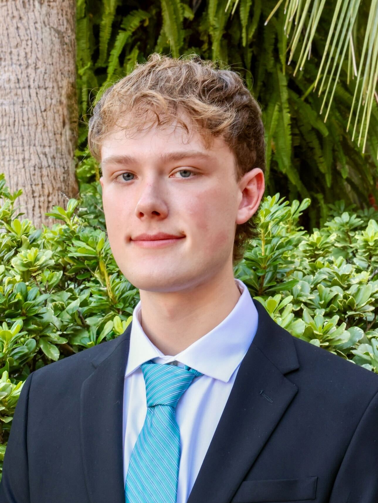
Grayton Humphrey is a undergraduate student majoring in Biochemistry at Florida State University.
Grayton is interested in molecular approaches to medical treatment and genetic processes. He began research mentorship with Dr. Miao in January 2026 and aims to develop hands-on experience in molecular biology research methods, laboratory techniques, and data analysis. Beyond his research activities, Grayton is a member of the Phi Delta Epsilon pre-medical fraternity, works as a Medical Assistant, and leads a pre-health colloquium for first-year FSU students.
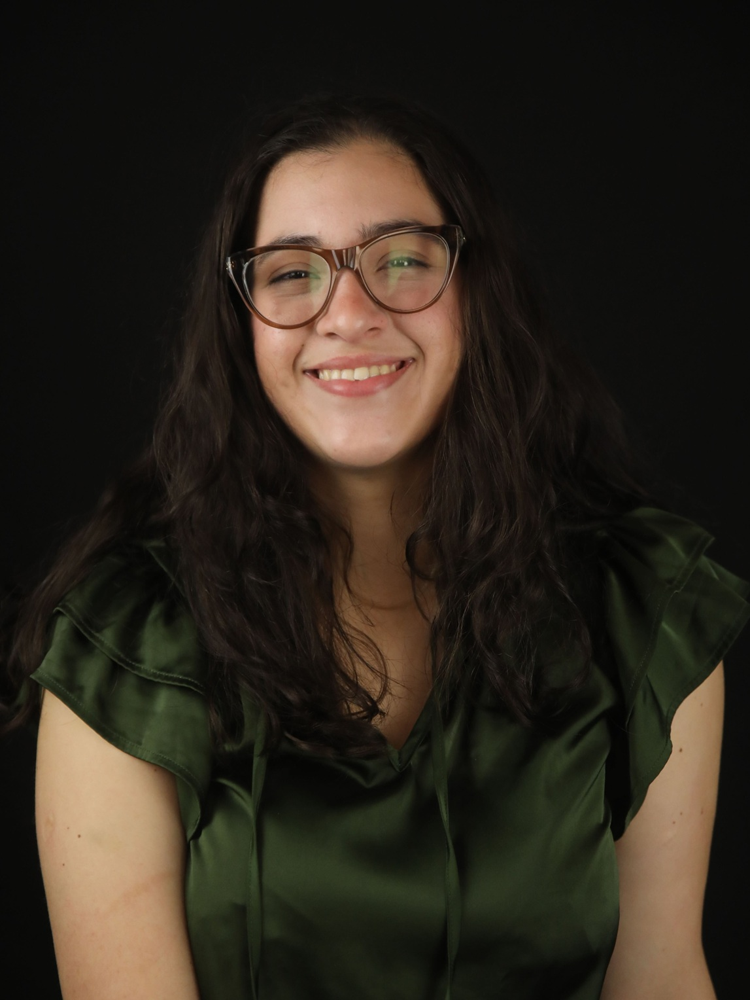
Maria Ruiz Guzman is an undergraduate student dual-majoring in Biological Sciences and Music at Florida State University.
Maria is originally from Venezuela and is pursuing the pre-veterinary track with interests in veterinary medicine and animal health. She joined the Miao Lab in March 2026 to gain research experience and hands-on experience in animal care to support her future career in veterinary medicine. She graduated from Dr. Phillips High School, where she served as an officer in the FFA chapter and gained experience in animal care and husbandry. Outside of the lab, she serves on the executive board of the FSU Pre-Veterinary Club and has a longstanding passion for music, with years of experience studying and performing the cello.
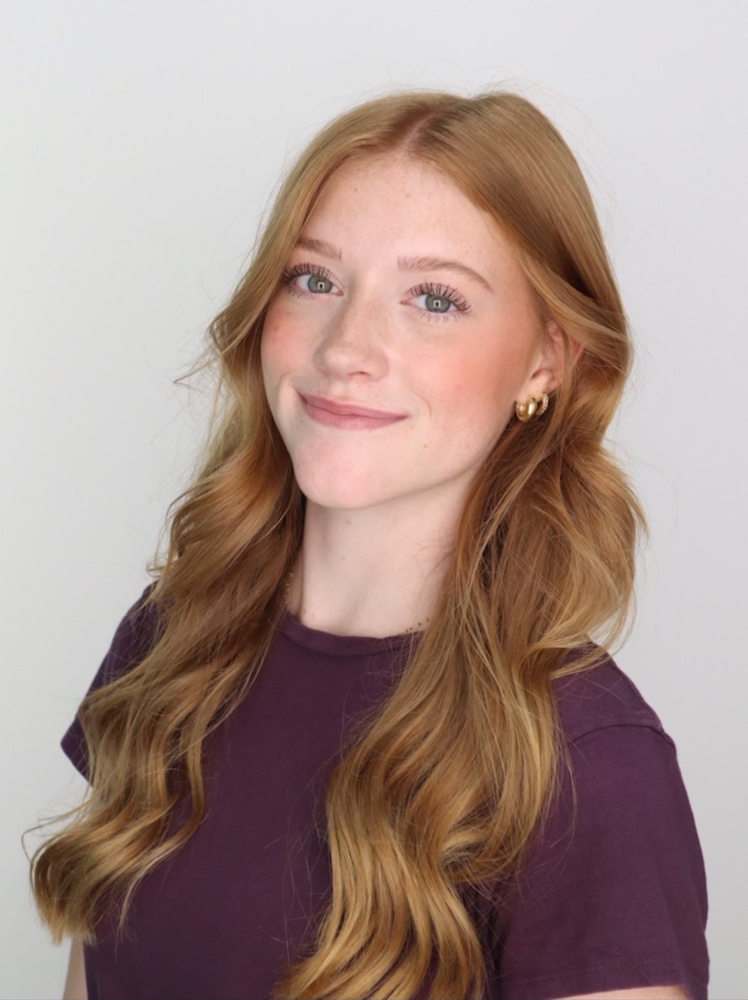
Anniston Josker is an undergraduate student majoring in Biological Science at Florida State University.
Anniston is pursuing the pre-veterinary track with an interest in exotic and small animal veterinary medicine. She began research mentorship with Dr. Miao in May 2026 to expand her experience in animal care and research. She is also interested in developing foundational laboratory skills and research techniques, with the goal of applying these competencies in future veterinary practice. Outside of the lab, she works as a veterinary technician and serves on the executive board of the FSU Pre-Veterinary Club.
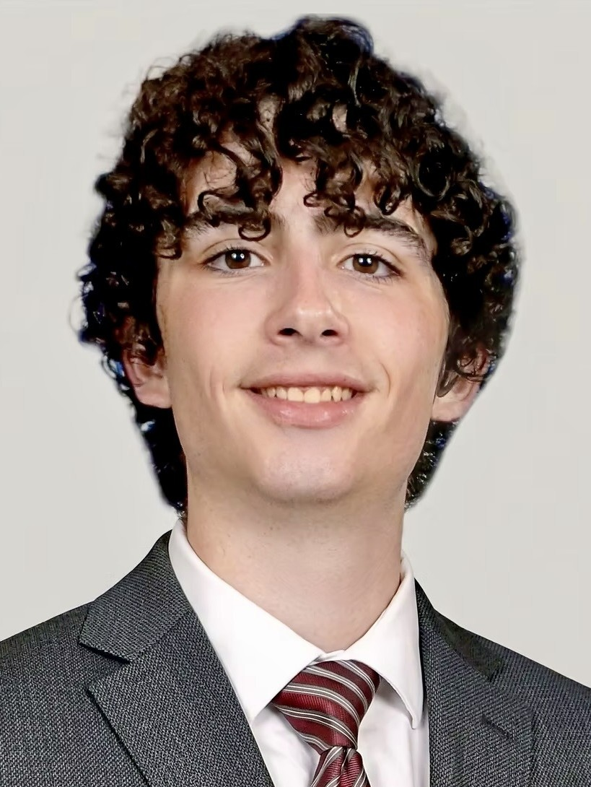
Joe Clagnaz is an undergraduate student majoring in Cell and Molecular Neuroscience on the Pre-Medical track at Florida State University.
Joe graduated from Pine Creek High School in Colorado before moving to Florida State University, where he is pursuing interests in understanding the molecular basis of disease to advance medical equity. He joined the Miao lab through the Directed Individual Study (DIS) program in May 2026 to contribute to research on mechanisms that impact cancer development. Beyond his research activities, Joe works as a medical assistant and holds leadership roles with The Big Event and the Health Education and Literacy (HEAL) organizations. In his free time, he enjoys rock climbing and going to the gym.
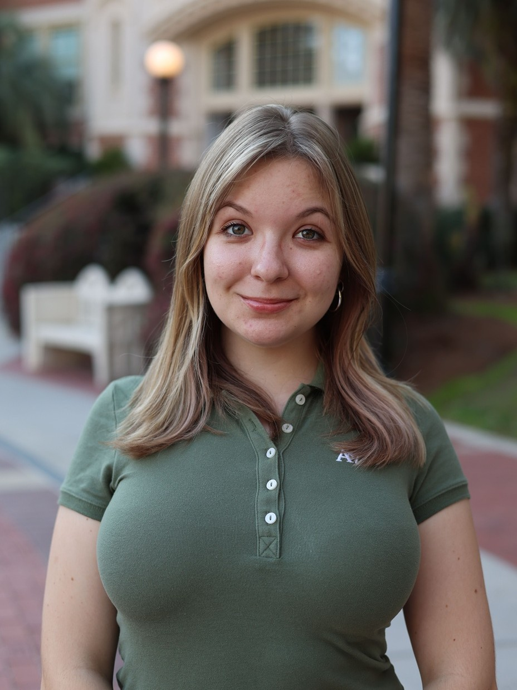
Anna Chumakov is an undergraduate student double-majoring in Computational Biology and Spanish at Florida State University.
Anna is interested in how gene regulation controls early development and cell fate decisions, epigenetic regulation, and how computational approaches can advance biological research. She joined the Miao lab through the Directed Individual Study (DIS) program in May 2026. Her campus involvements include Who We Play For, the Food Recovery Network, and Pulse at FSU. In her free time, she enjoys reading and exploring parks around Tallahassee.